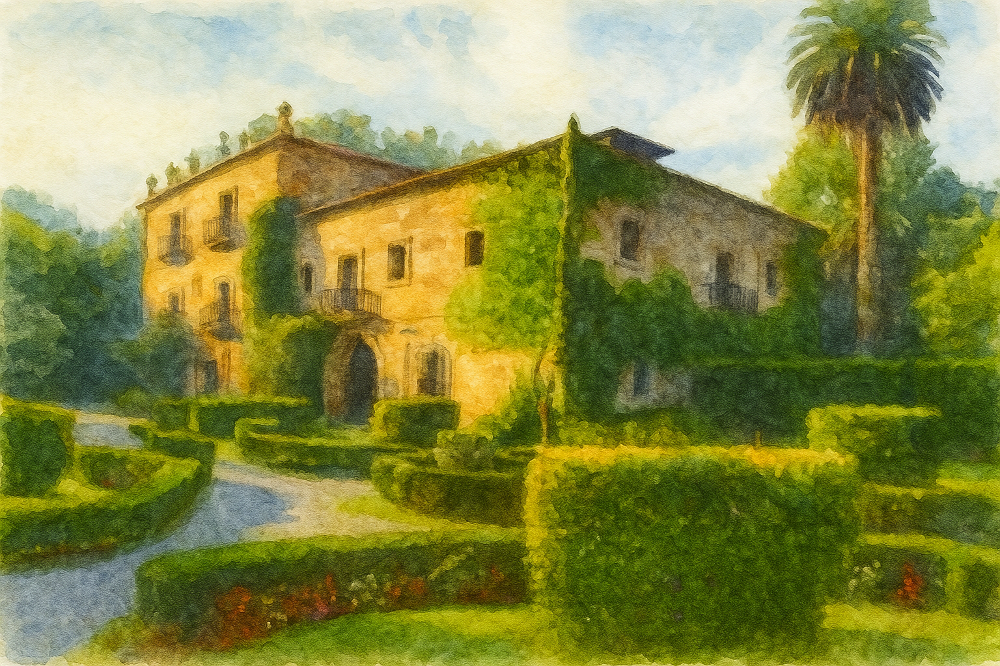

Cuándo y dónde
-
Cuándo
Nos casamos el 10 de julio de 2026.
La ceremonia será entre las 18:00 y las 19:00 (os lo pondremos aquí cuando sepamos la hora exacta).
¡Os rogamos puntualidad!0Días0Horas0Min0Seg -
Dónde
Finca de San Juan, Castañeda (Cantabria)

Cómo llegar
Finca de San Juan, Castañeda (Cantabria)
En autobús
Habrá servicio gratuito de autobús desde Torrelavega y Santander tanto para la ida como para la vuelta.
El autobús hará paradas en:
- Santander, zona Sardinero
- Santander, zona centro
- Torrelavega, zona centro
Os pondremos los horarios y los puntos de parada en cuanto los tengamos confirmados.
En coche
La finca dispone de parking gratuito para coches.
Para llegar, lo más fácil es:
- Tomar la A-8 dirección Bilbao
- Coger la salida 220 que lleva al pueblo de Castañeda
- En la rotonda, tomar la primera salida
- Seguir la calle principal hasta un cruce donde está señalizado Hostería Castañeda a la izquierda
Alojamiento
Por si no tenéis idea de dónde quedaros, os damos algunas ideas de zonas y alojamientos. Si tenéis cualquier duda, preguntadnos y os ayudamos 🤗.
Santander centro
Como su nombre indica es la zona centro de Santander, todo lo que está cerca de la bahía y el casco histórico. Lo mejor es que hay un montón de bares y restaurantes, podréis pasear por la bahía o coger el barco para ir al otro lado de la bahía.
Además, pasan un montón de autobuses que os llevan a la playa del Sardinero cada pocos minutos.
Santander zona Sardinero
Si queréis tener la playa a dos pasos, este es el mejor sitio. En esta zona están las dos playas del Sardinero, el Palacio de la Magdalena, la playa de Mataleñas y el faro de Cabo Mayor.
Hay un montón de autobuses que os llevan al centro en muy pocos minutos.
Torrelavega
Si preferís alojaros cerca de la finca, la ciudad más cercana es Torrelavega. Además, estaréis muy bien situados si queréis ir a otros pueblos como Suances, Santillana o Comillas, que son muy bonitos.
Otras zonas
Por último, si preferís quedaros en otro sitio de la "tierruca", os invitamos a ello, porque hay sitios chulísimos.
Es cierto que igual no es la opción más cómoda para el día de la boda, pero tenéis un fin de semana por delante, y Cantabria es infinita. Si tenéis cualquier duda, nos decís.
Nuestras recomendaciones
Os dejamos algunas recomendaciones que nos encantan, por Santander y alrededaores (que sí, que las rabas están muy buenas, pero las tortillas de patata aquí también 😉).
Nuestros favoritos en Santander
- Pinchos de tortilla: Cañadío (premio a mejor tortilla de España 2023), Diluvio, Bodi (hay varios en la ciudad). En general, todas están para chuparse los dedos!
- Las pizzas de Eleonora.
- Las focaccias del Bello Bello.
- Bodegas La conveniente un sitio con mucho encanto y solera, se come de raciones muy asequibles, y Bodega Fuente De que siempre está lleno (destacar el pincho de queso picón típico de la tierruca).
- El Sol: situado en una zona con ambiente alternativo. Bar de picoteo que nunca falla. Eso sí, no reservan y siempre se llena, pero puedes esperar tomándote algo en las escaleras más animadas de Santander.
- La Bruma: los nachos y tacos nunca fallan.
- Mercado Gastronómico del Este: la mejor opción si llueve o hace frío, dentro encontraréis varios bares de pinchos.
- Calle del Medio: en pleno centro y con mucho encanto, encontrareis varios bares como La Tuta, La Cátedra o El Bocarte para tomar raciones o pinchos.
- De cócteles, estos son los bares de cócteles con encanto que nos gustan: Little bobby speakeasy, La Solía, Hygge y La Enmienda 18.
- Cervezas artesanas (tenéis que probar la Dougalls): La Merla y Cervezas DouGall's (en este último tienen comida también)
- Desayunos y brunch: Panistas, With Love, Santa café, La Salvaje.
- Terraza con vistas: El Hotel Real (terraza con vistas a la bahía, pero los precios son algo caros)
- Bares de fiesta: Bares de cañadío y Lo que diga la rubia
Otros planes alrededor de Santander:
- Para ver el atardecer: el Rayo Verde, el Sol y Sal, el Panteón del Inglés, el faro de Cabo Mayor y el Castillo de los Locos
- Pueblos con encanto: Santillana del Mar, Comillas, Liérganes y Potes
Confirmar Asistencia
Os agradecemos que uséis el siguiente formulario para confirmar vuestra asistencia y la de vuestro acompañante